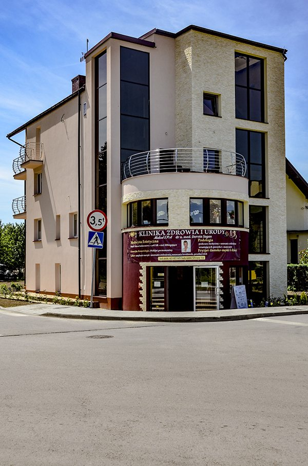
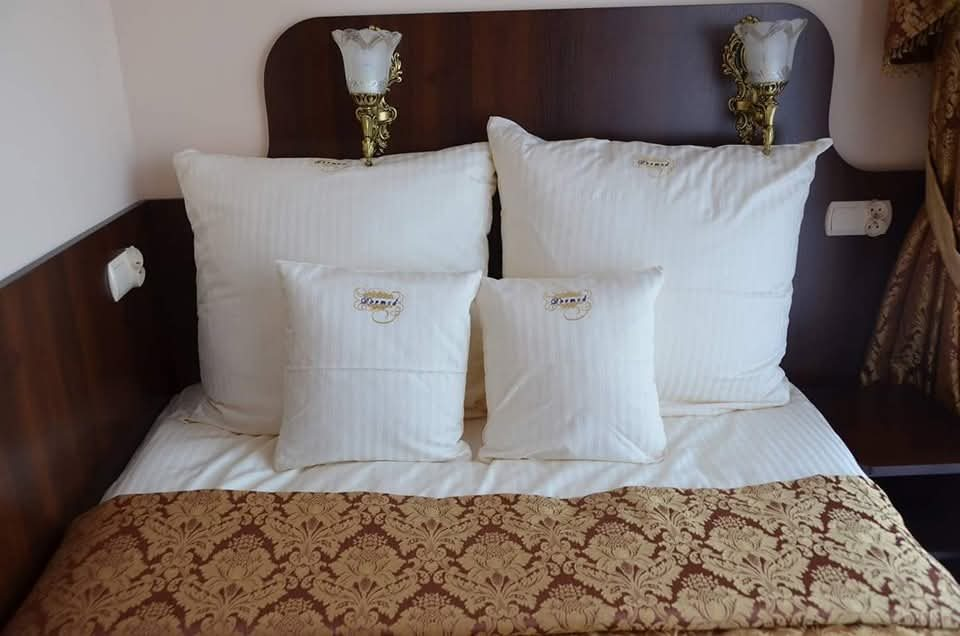
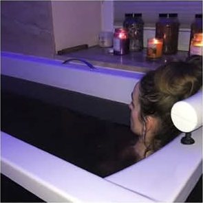
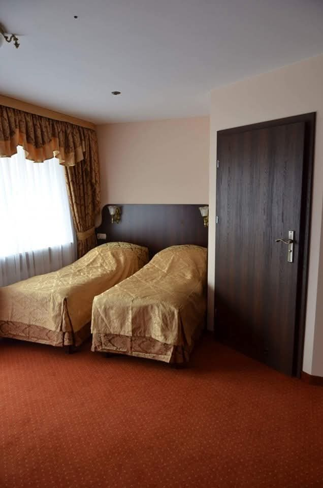
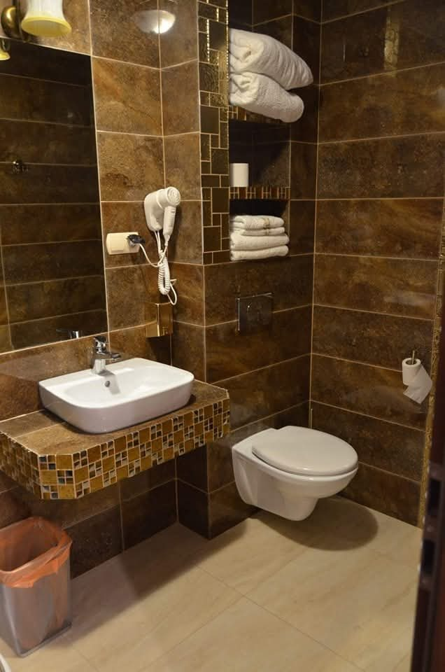
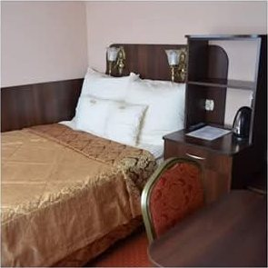
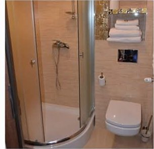
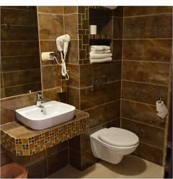
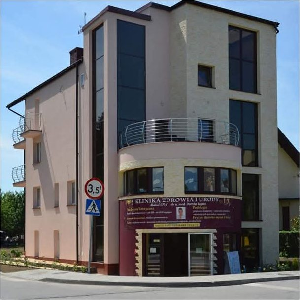
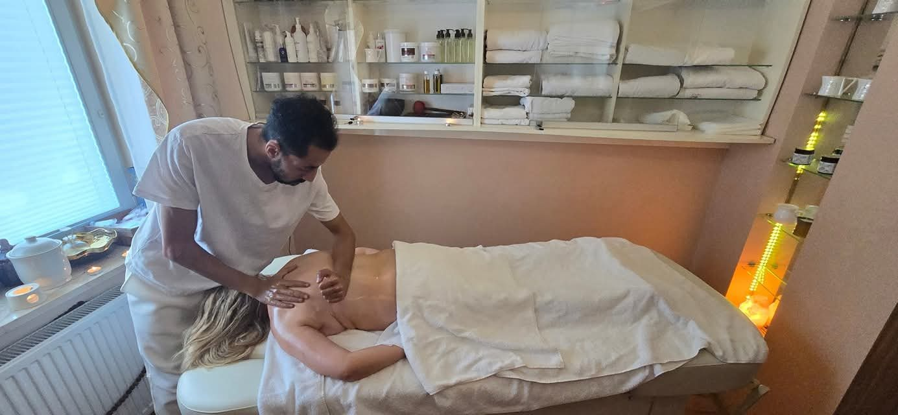

Śniadanie w bufecie
Serwowane codziennie rano w jadalni. Nie jest wliczone w cenę pokoju — zamawia się je w recepcji (65 zł/os./dzień).
Dziesięć pokoi w cichej, zdrojowej części Buska-Zdroju. Blisko parku, blisko tężni i — co najważniejsze — kilkanaście kroków od gabinetów zabiegowych.

Oferujemy 10 komfortowo wyposażonych pokoi 1- i 2-osobowych — zarówno na pobyty wypoczynkowe i weekendowe, jak i na turnusy zdrowotne oraz sanatoryjno-rehabilitacyjne.

Serwowane codziennie rano w jadalni. Nie jest wliczone w cenę pokoju — zamawia się je w recepcji (65 zł/os./dzień).
Miejsca postojowe w bezpośrednim sąsiedztwie obiektu, bez dodatkowych opłat.
Miejsce na kawę i oddech między zabiegami — w otoczeniu uzdrowiskowej zieleni.
Gabinety fizykoterapii, balneologii i kosmetologii w tym samym budynku.
Telewizor z płaskim ekranem w każdym pokoju, bezpłatny internet w całym obiekcie.
Tylko 10 pokoi — bez tłumu, kolejek i anonimowości dużych sanatoriów.
Ośrodek prywatny: nie potrzebujesz skierowania ani wpisu na listę oczekujących.
Nowy Park Zdrojowy, tężnia i deptak w kilka minut spacerem.
Każdy pokój ma własną łazienkę z kabiną prysznicową. Do dyspozycji Gości jest też wanna z chromoterapią — kolorowe światło i ciepła woda to najprostszy sposób, żeby wyciszyć się po dniu pełnym zabiegów.

Wnętrza ośrodka, gabinety zabiegowe i uzdrowiskowa okolica.







Jesteśmy w spokojnej, zdrojowej części miasta. Terapia nie kończy się przy drzwiach gabinetu — zaczyna się druga jej połowa: spacer, powietrze i cisza.
{kind=link}
{kind=link}
{kind=link}
{kind=link}
{kind=link}
{kind=link}
{kind=link}
{kind=link}
{kind=link}
{kind=link}